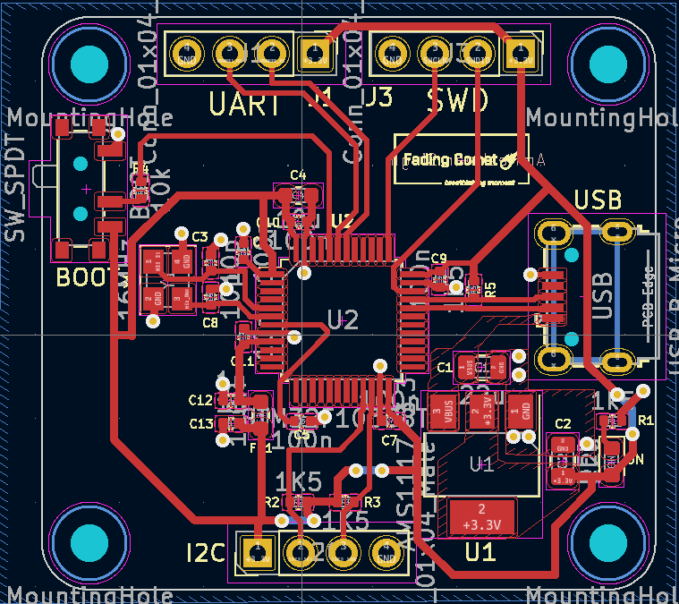

STM32 Development Board
the hardware-level design and development of a custom embedded systems development board built around an STM32 microcontroller, with integrated embedded firmware and dedicated interfaces for programming, debugging, and peripheral communication.

Overview
A development board based on STM32[Link To the datasheet]with integrated embedded firmware with hardware-level design, the goal is to develop a self-contained hardware platform that brings together microcontroller architecture, PCB design, power management, communication interfaces, and firmware development
Technical Approach

At the heart of the board is an STM32 microcontroller, which runs
the firmware and handles communication with the other components
and peripherals. I've also included a few interfaces to make
working with the board easier. There's a UART header (J1) for
serial communication, an SWD header (J3) for flashing and
debugging the microcontroller, and an I2C interface for connecting
external sensors and modules.
The board also has a USB port for connecting it to a computer,
along with a BOOT configuration interface that lets me control how
the microcontroller starts up. On the power side, there's a 3.3 V
supply circuit that provides the required voltage to the STM32 and
the rest of the board, along with the necessary supporting
components.
The idea is to have all these things integrated into one custom
PCB rather than relying on a separate development board and a
collection of external modules.
Core: ARM® 32-bit Cortex®-M7 CPU with
DPFPU, ART Accelerator and L1-cache:
16 Kbytes I/D cache, allowing 0-wait state
execution from embedded Flash and external
memories, up to 216 MHz, MPU,
462 DMIPS/2.14 DMIPS/MHz (Dhrystone 2.1),
and DSP instructions